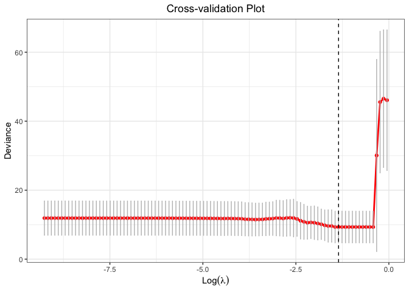
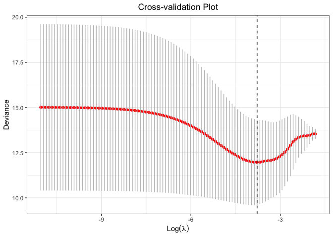

The goal of glmtlp is to fit generalized linear models with l0, l1 and truncated lasso penalty.
Installation
You can install the released version of glmtlp from CRAN with:
install.packages("glmtlp")Example
This is a basic example which shows you how to solve a common problem:
library(glmtlp)
#> Loading required package: foreach
#> Loading required package: parallel
data("gau_data")
cv.fit <- cv.glmtlp(gau_data$X, gau_data$y, family = "gaussian", penalty = "tlp", ncores=2)
plot(cv.fit)
coef(cv.fit)
#> intercept V1 V2 V3 V4 V5
#> -0.01462262 0.99418244 0.00000000 0.00000000 0.00000000 0.00000000
#> V6 V7 V8 V9 V10 V11
#> 0.89829254 0.00000000 0.00000000 0.00000000 0.86095932 0.00000000
#> V12 V13 V14 V15 V16 V17
#> 0.00000000 0.00000000 0.00000000 0.97499582 0.00000000 0.00000000
#> V18 V19 V20
#> 0.00000000 0.00000000 0.88057426
cv.fit <- cv.glmtlp(gau_data$X, gau_data$y, family = "gaussian", penalty = "l0", ncores=2)
plot(cv.fit)
coef(cv.fit)
#> intercept V1 V2 V3 V4 V5
#> -0.08612171 0.85744742 0.00000000 0.00000000 0.00000000 0.00000000
#> V6 V7 V8 V9 V10 V11
#> 0.73126672 0.00000000 0.00000000 0.00000000 0.00000000 0.00000000
#> V12 V13 V14 V15 V16 V17
#> 0.00000000 0.00000000 0.00000000 0.92340689 0.00000000 0.00000000
#> V18 V19 V20
#> 0.00000000 0.00000000 0.92553573
data("bin_data")
cv.fit <- cv.glmtlp(bin_data$X, bin_data$y, family = "binomial", penalty = "l1", ncores=2)
plot(cv.fit)
coef(cv.fit)
#> intercept V1 V2 V3 V4 V5
#> -0.177047437 0.143053660 0.000000000 0.000000000 0.000000000 -0.226773242
#> V6 V7 V8 V9 V10 V11
#> 0.373233870 -0.383963001 0.000000000 0.221140054 0.019063141 0.000000000
#> V12 V13 V14 V15 V16 V17
#> 0.000000000 -0.058402839 0.000000000 0.293766193 0.000000000 0.000000000
#> V18 V19 V20
#> 0.000000000 0.005986592 0.564046262